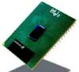
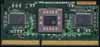
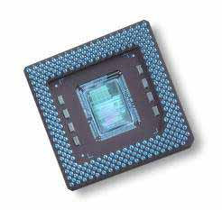

|
|
| 当前位置：电脑报电子版 > 1999 年 > 46 期 > 硬件周刊 > 速度为王——1999年CPU技术回顾 |
| 《 速度为王——1999年CPU技术回顾 》 |
| 1999年CPU市场是风云变幻的一年，在这一年中Intel和AMD公司都推出了自己新一代的产品，使CPU的处理能力得到进一步的发展。100MHz外频处理器得到用户的肯定，成为业界的潮流。一些低价位的处理器也在市场上频繁出现，成为商用机和入门级电脑经济的选择。应用于高端市场的至强处理器，顺利地进入了中高档服务器领域并显示出卓越的性能。在笔记本电脑市场，Intel笔记本专用的低功耗处理器及时跟进，缩小了与台式电脑间主频的差距。AMD公司的处理器也开始应用于笔记本电脑，凭借其较好的性价比，受到了包括东芝在内的大笔记本厂商的支持。
一、Coppermine——王者之风  Intel公司在Slot1架构加上PentiumⅡ处理器的组合取得高端PC系统的成功后，今年2月初推出了名为“Katmai”的PentiumⅢ处理器，它继续采用Slot1的架构，0.25微米制造工艺，集成以CPU时钟半速运行的512KB的二级缓存。PentiumⅢ在以往MMX指令的基础上增加了70条多媒体指令的SSE技术，其中包含提高3D图形运算效率的50条SIMD浮点运算指令、12条MMX整数运算增强指令、8条优化内存中连续数据块传输指令。理论上这些指令对目前流行的图像处理、浮点运算、3D运算、视频处理、音频处理等诸多多媒体应用起到全面强化的作用。SEE指令与3D Now!指令彼此互不兼容，但SSE包含了3D Now!技术的绝大部分功能，只是实现的方法不同。同时PentiumⅢ内集成8个128位的矢量寄存器，在某些情况下它可以同时容纳处理4个32位浮点数。PentiumⅢ处理器内部还含有一个128位的序列号，可以用来标示每一部电脑。尽管从电子商务安全认证的角度出发来看，这无疑是一件好事，不过从保密的角度来看，一些机要部门的电脑在网上更容易受到监视跟踪，因而序列号问题曾在业内引起争议，为此Intel不得不特别发布序列号控制软件，让用户根据需要通过BIOS设置来决定是否开启此序列号。4月初，Intel发布新的主板芯片组i810，并试图以整合技术影响处理器的发展方向，但威盛电子联合众多厂商推行PC133架构，而且AMD的K7处理器异军突起，使得Intel不得不重新调整其高端CPU的开发进程。10月底Intel正式发布代号为“Coppermine”的新一代PentiumⅢ处理器，把系统前端总线提升到133MHz，CPU主频最高达到733MHz。Coppermine采用全新的核心设计，内置256KB与CPU主频同步运行的二级缓存，并率先采用0.18微米的制程。由于制造工艺的提高，新一代的Coppermine处理器的集成度大为提高，它的核心集成了二千八百万个晶体管，远超过原来Katmai处理器的九百万个晶体管数量。制程工艺的改进也使得单位面积的晶体管数量更多，CPU硅芯片可以做得更小，从而使芯片面积更小，功耗大为减小、成本也得以降低，这样，更适用于笔记本电脑使用。另外，它先进的缓存转换架构，在数据传输的带宽、系统响应周期等方面都比katmai要快得多，因而整体性能比同频的Katmai有明显的提高。 在低端市场上Intel加紧发布更高主频的赛扬处理器，凭借与CPU同主频运行的128KB二级缓存的支持，进一步巩固低端PC的领先地位，Socket370架构成为低端处理器的代名词。在新发布的Coppermine系统处理器中，Intel推出了采用全新FC－PGA封装的Socket370处理器，这两款处理器采用与Slot1架构处理器相同的制造工艺，系统前端总线仅为100MHz，但性能却远超过同频的Katmai处理器。FC－PGA处理器是定位于高性能低价格的产品，它并不是作为低端市场的赛扬处理器的替代品出现的，它借助的只是Socket370的插槽。由于采用新的电压转换器VRM8.4标准，FC－PGA处理器并不兼容于现有Socket370主板，但由于并不需要更大的改动，现有的主板经过某些升级即可支持FC－PGA的Coppermine。 在笔记本处理器方面，Intel同样也发布了Coppernine的产品，而且采用全新的适合笔记本电脑的“SpeedStep”技术，可以在笔记本电脑外接电源工作时能够以正常速度运行。在使用内置电池工作时，为了降低能耗，能够自动降低系统主频运行。SpeedStep技术的应用，对于笔记本处理器主频和性能的提高有积极的促进作用。 除此之外，在高端面向服务器市场，Intel也发布了新的Xeon（至强）处理器，并按照不同用户的需要发布了多个档次的版本，主要的区别是集成的二级缓存容量不同。新Xeon同样也采用了“Coppermine”核心和0.18微米制程，它采用Slot2接口，必须与采用Intel GX/NX控制芯片组的主板协同工作，虽然日前有公司发布了Slot2转Slot1的转接卡，但由于Xeon处理器价格上原因一时间不会进入个人PC，所以意义不是很大。 二、Athlon——强者之势  PentiumⅢ上市初期的确以其高端应用的强大性能成为当之无愧的王者，Intel也曾想借助Slot1架构的专利技术，以期全面封杀AMD的系列处理器，然而AMD已充分认识到如果只跟着Intel的架构发展，势必会缩小自己的发展前途。虽然AMD公司强劲的低端处理器K6－2系列遭到Intel的赛扬处理器的强劲挑战，AMD仍于年初发布了新的K6－Ⅲ处理器。K6－Ⅲ处理器采用CTX的核心，具有更为先进的3D Now!技术并与现有的Socket7系统兼容。为了提高整体性能，K6－Ⅲ处理器核心集成高达256KB高速二级缓存，而Socket7主板上原来的二级缓存就转变成三级缓存。这种三级缓存结构进一步缩小了处理器与内存间的瓶颈，使得电脑的整体性能有相当的提升。不过K6－Ⅲ处理器的面世并没有达到AMD公司预期的效果，在玩家注重游戏性能的今天，它的价值远不如前代的K6－2，正因为如此，AMD公司的下一代处理器K7会悄悄面世。AMD在最初发布设计新的处理器架构的构想时，人们并没有对称为K7的下一代处理器更多的关注。6月底，AMD正式更名K7处理器为“Athlon”，它作为AMD公司新一代的旗舰产品，仍然使用0.25微米工艺，起点主频定位在500MHz。但在8月发布时，AMD同时发布了最高600MHz 产品，Athlon处理器不但主频超过PentiumⅢ处理器，而且AMD一向被人们认为弱项的浮点运算表现也超过同频的PentiumⅢ处理器。这是CPU发展具有历史意义的一页，兼容CPU厂商第一次全面在性能上超过Intel的同级产品。实际上这也是AMD成功转型的聪明之处，与其在低端市场落在下风，处于被动挨打的境地，不如全面在高端产品上一争高下。Athlon处理器使用不同于Slot1的SlotA架构，不能与现有的Slot 1或Slot2架构兼容，而必须配备专用的主板。在系统结构上，Athlon处理器采用不同于x86架构的EV6总线协议，提供200MHz系统前端总线和3D Now！技术的支持。但目前上市的Athlon处理器仍使用100MHz外频，所谓的200MHz的前端总线，只是意味着在高速内存普及后Athlon的性能可以进一步提高（处理器与内存之间数据交换速度的提高）。Athlon处理器还采用大容量缓存的方法提高性能，在CPU核心中集成了128K的一级缓存，其容量为 PentiumⅡ处理器的四倍，而二级缓存则采用类似Intel的Xeon的灵活配置，目前标准版本的二级缓存为512KB，工作在处理器主频速度一半的状态下。AMD公司宣称Athlon的二级缓存可以设置为从512KB～8MB。Athlon还具有三个并行的超标量结构，在一个时钟周期中可以处理比PentiumⅢ更多的SIMD指令。在后续产品中，AMD已经发布了700MHz的Athlon处理器，它的实际性能并不比733MHz的Coppermine差多少，而且Athlon还具有一个制程优势，它的产品还没有采用0.18微米的技术生产，所以在实际性能上，Athlon仍具有很大的潜力可以挖掘。 三、Joshua——寂寞高手  在低端处理器市场上，Cyrix公司的MⅡ处理器也曾以极高的性价比获得商业用户的青睐，与Intel和AMD三分天下。在被美国国民半导体公司（NS）收购后，Cyrix公司在产品开发和性能上并没有得到发展，也一度传出Cyrix退出CPU市场角逐的消息。但可喜的是，6月25日，目前最大的主板兼容芯片组厂商威盛电子（VIA），宣布正式并购Cyrix公司的微处理器部门，加之威盛电子现有技术实力和同时收购的另一家兼容CPU商IDT的微处理器部门的组合，威盛电子已经具备三分天下的实力。尽管威盛电子在是否生产CPU上一直保持低调，但事实已经证明已是势在必行。威盛电子发布的新CPU仍然使用Cyrix公司的商标，最初命名为“Gobi”（戈壁），但由于某些原因再度改名为“Joshua”（约书亚）。由于Cyrix被国民半导体公司收购时已获得Intel的Socket370架构使用的授权，Joshua处理器采用Socket370架构，在系统架构保持于Socket370的赛扬处理器的兼容。它采用了Cyrix原先拟定的下一代处理器的核心“Cayenne（辣椒）”，支持66MHz、100MHz以及133MHz的系统前端总线。同时Joshua核心内置了64KB的一级缓存和256KB的二级缓存，支持MMX多媒体指令集以及增强的3D特性，针对浮点性能较弱的缺陷，Joshua还重新设计了超标量的浮点处理器，使浮点性能有较大的改进。在未来的产品里，Joshua处理器也将采用0.18微米技术制造，配合威盛电子在研制主板芯片组上的实力，Joshua的整体性能上应该有不俗的表现。 四、结语 1999年的CPU的技术发展概括起来可称做“速度为王”，系统前端总线基本完成从100MHz到133MHz的转变，加上0.18微米技术的成功使用，CPU的主频速度提高明显。而AMD公司遵循的EV6总线协议，使得高端CPU市场的纷争，不再是Intel一枝独秀。AMD甚至宣称年底将发布1GMHz的处理器。同时随着AMD与Intel技术和产品竞争的加剧，速度更快、性能更强的处理处器的换代时间必定更快。另一方面Intel和AMD公司平分天下的格局已无法维持，除了威盛电子的介入，台湾另一家著名的兼容芯片组制造公司矽统（SIS）也并购了仅剩的另一家兼容处理器厂商——RISE（瑞思）。RISE生产的MP6 处理器定位的也是低端市场，而矽统公司拥有自己的晶元生产工厂，在正常情况下，矽统公司生产处理器同样成为可能。这样在低端市场上，包括Intel的赛扬和AMD的K6－Ⅲ处理器在内，很可能出现四分天下的局面，虽然这种格局的演变还要待以时日，但技术的更新与速度、性能的提升仍将成为今后CPU发展的方向。 |
| 下载本期推荐软件 | 页 首 |
| 《电脑报》版权所有，电脑报网站编辑部设计制作发布 |